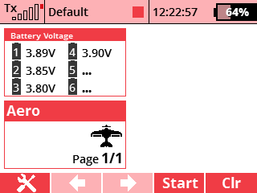

Aplikace umožňuje zobrazit stručné informace o napětí připojené baterie v jednom telemetrickém okně na hlavní obrazovce.
V menu zvolte položku Aplikace - Uživatelské aplikace. Stisknutím klávsy F(3) otevřete dialog pro výběr aplikací. Zde vyberte soubor "BattVolt".
Otevřete konfiguraci aplikace. Zde zvolte senzor použitý pro vyčítání informací o baterii. Aplikace byla vyvinutá pro čtení dat ze senzoru MULi6S, proto jej velmi doporučujeme pro použití s touto aplikací.
V menu zvolte nabídku Časovače/senzory - Údaje na hlavní obrazovce. Zde vytvořte novou položku a vyberte "Napětí baterie". Aplikace bude mít vlastní obrazovku na displeji.
Zdrojové kódy můžete stáhnout z oficiálního repozitáře JETImodel Lua-Apps GitHub.